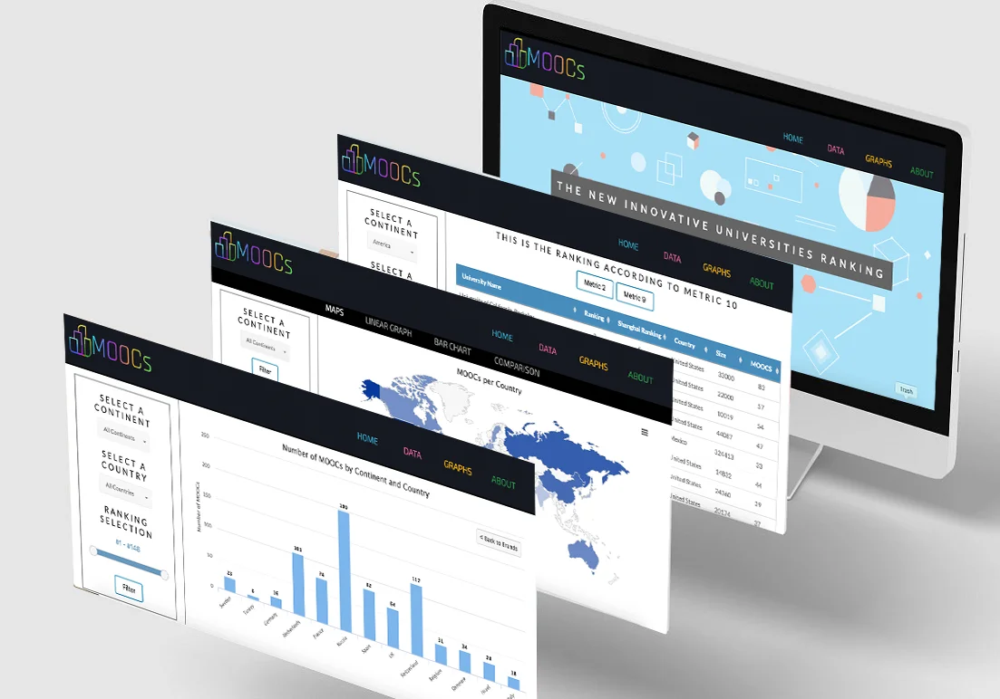

The topic was to create a higher institutions ranking according to a KPI by measuring their amount of content online, more especifically the number of MOOCs. The process consisted in creating a web scrapper script in Python to download data from Coursera and Edx. Then, this data was cleaned and inserted into a MongoDB database. This information was then retrieved and displayed in a web application.
Architecture of the system
The web application was developed following the model-view-controller architecture. The model will describe the database design and is the responsible for maintaining the data, which in this case is handled by MongoDB. The view presents the model in a way in which the user will be see and interact with the data in the User Interface (UI). It is handled by EJS and the controller. The controller will establish and control the interactions between the model and the view, which in this case will be handled in NodeJS and ExpressJS.
User Interface
Regarding the User Interface used, everything is implemented using HTML 5, CSS version 4, EJS, Javascript and JQuery. For the homepage I used a technique called parallax scrolling in order to create a sense of dynamism and so that the website was not so static.
In the data section, there will be tables displaying the top ranking universities. These tables are responsive and dynamic, so when changing the filter parameters, the table will get updated immediately. This filtering was performed by http requests to the server.
Regarding the graphs section, this will display graphs, charts and maps from Highcharts using my own data. Highcharts is a pure JavaScript library used to enhance web applications by adding interactive charting capability. My web application focuses on linear graphs, bar graphs, pie charts and maps to display the different regions. By using Highcharts, there is also a section called “Comparison”, where the user will be able to compare two universities using charts views.
Deployment of web application
Finally, the web application was deployed in Heroku. Heroku is a cloud platform as a service (PaaS) supporting Node.js that is used as a web application deployment model. The source code of my web application was deployed by using Heroku Git and pushing to master. Then, it was added a MongoDB to the resources of it.
Link to project: https://moocs-university-ranking.herokuapp.com/